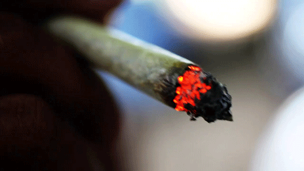

/// CSS from old PoodleCorp website (poodlecorp.org [archived July 2016])
<html>
<head>
  <link rel="icon"
      type="image/png"
      href="icon.png">
  <style>.box{width:110px;height:160px;border:1px solid black;}.box2{width:310px;height:160px;border:1px solid black;}#leftsnoop{position:absolute;visibility:visible;left:10px;top:50px;z-index:200;}#rightsnoop{position:absolute;visibility:visible;right:10px;top:50px;z-index:200;}</style>	
  <title>The experiment</title>
</head>
<body>
<style>
	#loading{
		position: absolute;
		top:0;
		left:0;
		width: 100%;
		height: 100%;
		overflow: none;
		display: block;
		z-index: 10000;
	}
</style>

<div class="box">
<u>WE ARE IN NEED OF FRESH MEMES!</u>
<br>

<br>
If you want to contribute, fork this project which can be found <a href="https://github.com/icechen1/the_experiment">here</a> and make a pull request. 
</div>

<div class="box2">
<h1>When you fix the segfault</h1>
<br/>
<audio controls autoplay>
<source src="/dank/wombo-combo.mp3" type="audio/mpeg">
</audio>
<p>Made with love.</p>
</div>
	
<div id="leftsnoop">

</div>

<div id="rightsnoop">

</div>
</body>
<script src="https://code.jquery.com/jquery-3.1.1.min.js"></script>
<script type="text/javascript">
	$(document).ready(function() {
      $( "#loading" ).fadeOut(3000);
});
</script>
</html>

>>>>>>> icechen1/master
